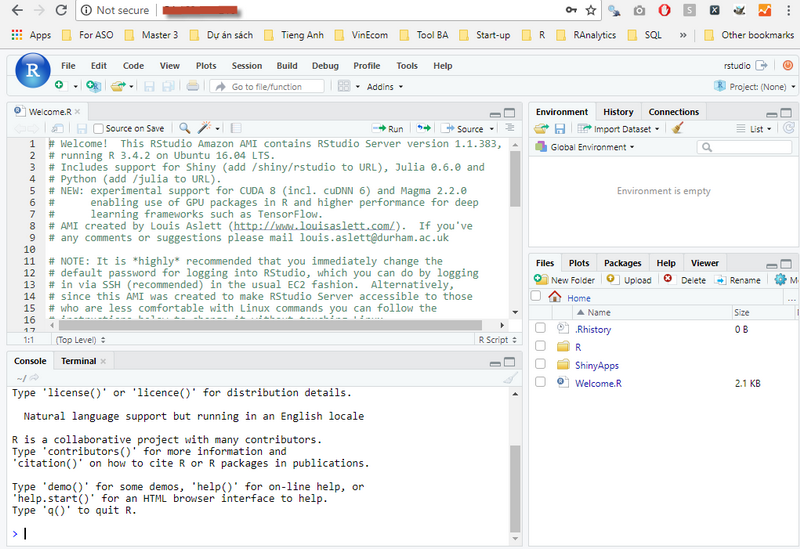

1. Cài đặt server RStudio trên Amazon¶
1.1. Giói thiệu¶
Như chúng ta đều biết, R gặp các vấn đề giới hạn của bộ nhớ. Đặc biệt, với các bạn sử dụng Windows, R còn gặp các vấn đề về lỗi font tiếng Việt (encoding). Thêm vào đó, với các bạn muốn sử dụng R trong Deep Learning với CUDA cũng sẽ gặp rất nhiều khó khăn trong việc cài đặt cũng như các vấn đề về chi phí. Sử dụng RStudio online trên Amazon là cách thức hữu hiệu trong giải quyết các vấn đề sau:
- Dữ liệu vượt quá dung lượng bộ nhớ máy tính (RAM)
- Có thể làm việc mọi nơi, mọi lúc được
Trong chương này, chúng ta sẽ học cách tạo 1 server Rstudio online trên Amazon trong vòng chưa đến một phút.
1.2. Bước 0: Tạo account trên amazon¶
- Đăng ký 1 tài khoản trên Amazon với đường link sau https://aws.amazon.com/
- Điền thông tin tài khoản thẻ tín dụng để có thể thanh toán với dịch vụ của Amazon
1.3. Bước 1: Sử dụng AMI của RStudio trên Amazon¶
Truy cập vào trang web sau: [http://www.louisaslett.com/RStudio_AMI]. Trang web này chứa tất cả các RStudio AMI (Amazon Machine Image) của RStudio bản mới nhất
{kind=link}
1.4. Bước 2: Lựa chọn server của Amazon.¶
Thông thường mình sẽ sử dụng dịch vụ Amazon tại Singapore. Tuy nhiên, các bạn có thể lựa chọn tùy ý Server mong muốn.
1.5. Bước 3: Chọn cấu hình máy tính mong muốn¶
Sau khi click vào AMI của Singapore sẽ hiển thị giao diện như sau:
{kind=link}
Ở bước này, ta phải chọn loại server mong muốn, các bạn có thể sử dụng
rất nhiều các cấu hình khác nhau để cài đặt Rstudio server. Để tiết kiệm
và sử dụng với mục đích thử nghiệm, mình sẽ dùng máy t2.micro .
1.6. Bước 4: Lựa chọn Security Group¶
Để đơn giản, các bạn có thể đến thẳng bước
6. Configure Security Group và chọn Type là HTTP để có thể
truy cập vào RStudio online.
{kind=link}
- Bước 5: Launch RStudio Server, lưu ý chọn option
Proceed without key pairđể đơn giản như dưới đây.
{kind=link}
Sau khi launching xong, ta sẽ có giao diện như hình dưới, các bạn lưu ý vào thẳng console của Amazon (click theo hình ở dưới) để tìm kiếm IP của Rstudio online của mình vừa tạo.
{kind=link}
1.7. Bước 6: Tìm địa chỉ IP Public của máy tính vừa tạo và truy cập¶
IP của máy tính vừa tạo sẽ có địa chỉ IP4 như hình dưới đây
{kind=link}
1.8. Bước 7: Truy cập và sử dụng RStudio¶
Truy cập vào địa chỉ IP phía trên. Chúng ta có thể truy cập với mật khẩu
và log-in mặc định là user: rstudio và password: rstudio như
dưới đây
{kind=link}
Sau khi đăng nhập được vào, các bạn có thể đổi mật khẩu, liên kết
RStudio với account Dropbox để thuận tiện trong việc phân tích và sao
lưu dữ liệu như trong script Welcome.R trong hình dưới đây.

Như vậy, chúng ta đã vừa tạo được một server Rstudio online của riêng mình. Việc sử dụng RStudio online sẽ rất hữu dụng trong việc vượt qua các hạn chế về cấu hình máy tính cá nhân.